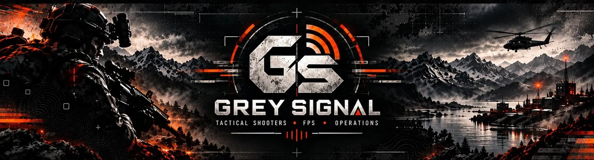

Project · Website, app and infrastructure · 2026
Grey Signal.
The engineering built around my gaming channel: a self-hosted multipage website, a C# Windows control app, an installer, a Node.js site engine, a Cloudflare Worker version and live PC telemetry.

- Type
- Engineering project
- Status
- Active
- Role
- Designer and developer
- Hosting today
- Self-hosted · HTTP only
What I built
The engineering behind a channel.
Self-hosted website
A multipage site: home, videos, ops, a live rig page, about and contact.
C# Windows control app
Runs and manages the site engine on my PC and reports the PC's specs and load.
Windows installer
An .msi installer for the app, built with WiX.
Node.js site engine
Serves the site, handles the contact form, stores data in SQLite and has a local-only admin area.
Cloudflare Worker version
The same site on Workers with a D1 database and email. Prepared, not live (see below).
Guides and security notes
Six written guides covering local running, Cloudflare, security and hosting options.
Branding and graphics
Logo, banner, welcome art and channel panels, shown on the channel page.
Working and prepared
What is live, and what is not.
Kept separate so nothing prepared is mistaken for something deployed.
Working today
The Node.js engine running on my PC and serving the site over plain HTTP at a public IP address, the live rig page, the Windows app, and a built MSI installer.
Prepared, not live
The Cloudflare Worker version, hosting through a Cloudflare Tunnel, home hosting with HTTPS, and a Docker setup for a rented server. The code and guides exist; none is switched on.
Go deeper
More on Grey Signal.
Explore the site